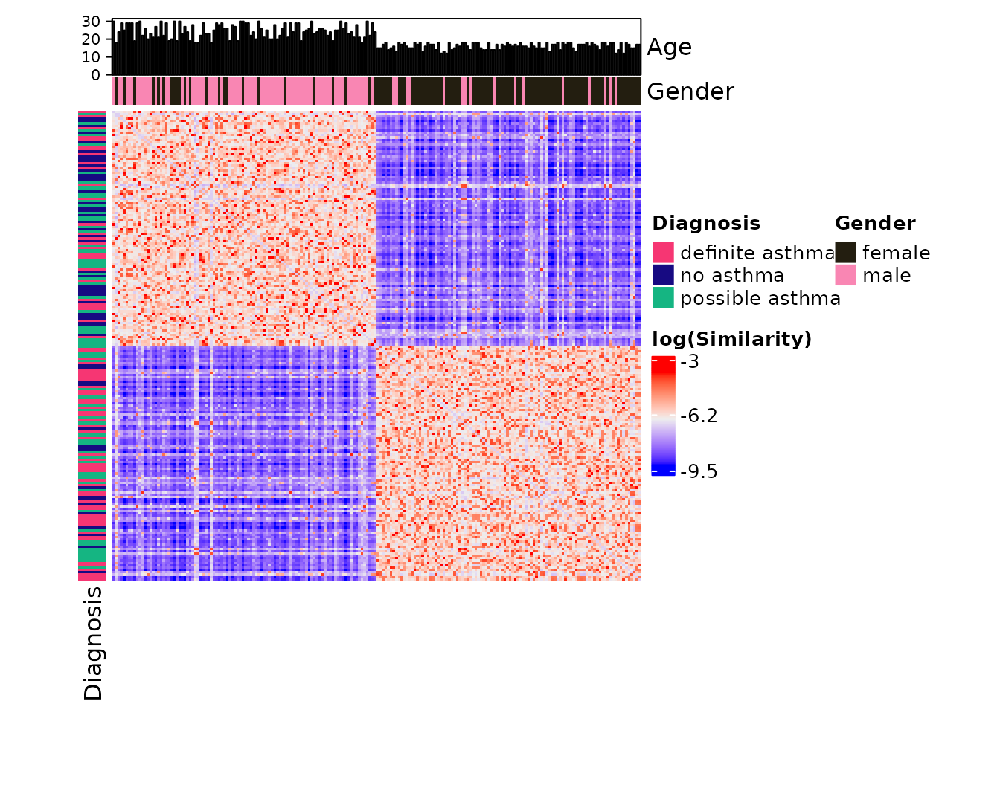
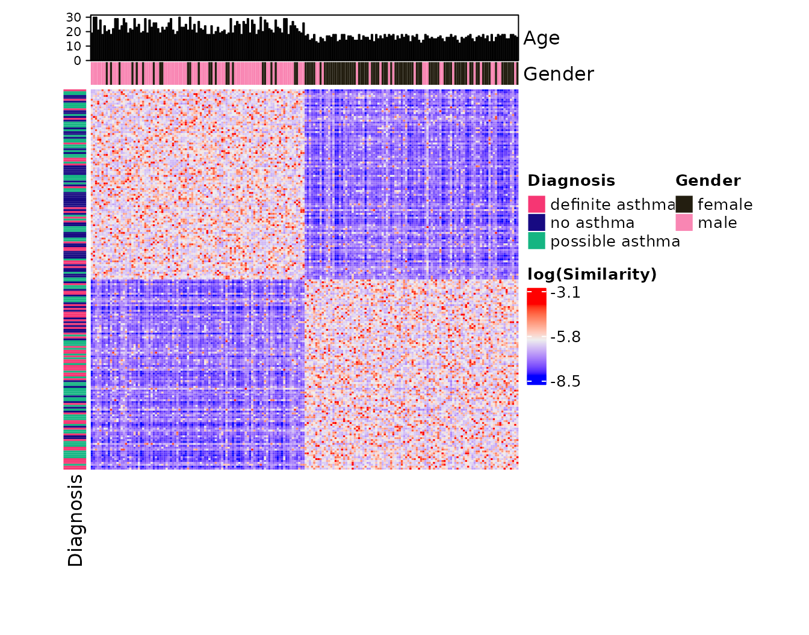
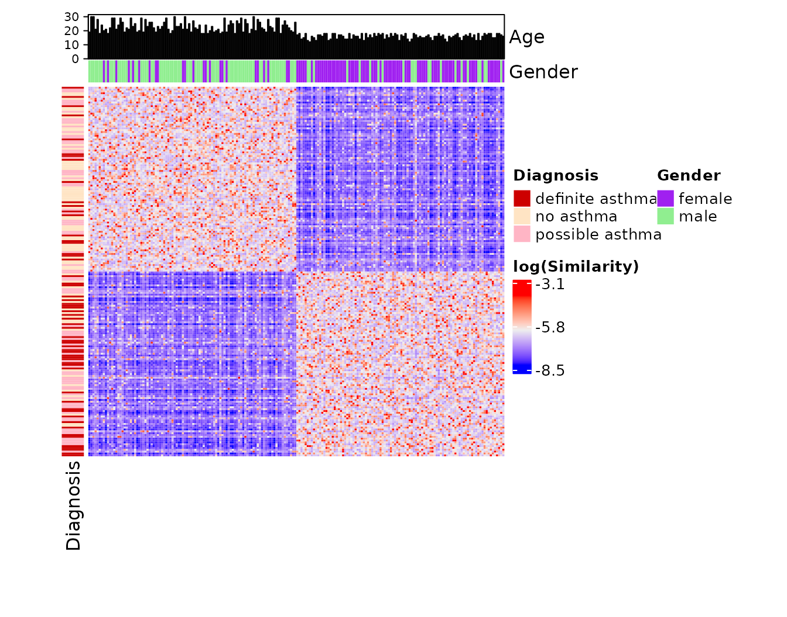

Plotting Similarity Matrices
similarity_matrix_heatmap.RmdThis vignette walks through usage of
similarity_matrix_heatmap to visualize the final similarity
matrix produced by a run of SNF and how that matrix associates with
other patient attributes.
Data set-up
Mock data setup is below. This example currently makes use of the mock “Data1” and “Data2” objects that are made available by loading the SNFtool package.
By default, these two objects are sorted such that the first 100 patients were drawn from one distribution and the second set of 100 patients were drawn from another. We’ll extend this data with some fake additional associations. The first 100 patients (who come from one cluster) will be more likely to be females with a higher chance of having a definite positive asthma diagnosis and of having atopic asthma than the second set of 100 patients.
# Set the possible values
gender <- c("female", "male")
diagnosis <- c("definite asthma", "possible asthma", "no asthma")
atopic_asthma <- c("Yes", "No")
# C1: mostly F, mostly "definite asthma", mostly "Yes" to atopic asthma
c1_genders <- sample(gender, 100, replace = TRUE, prob = c(3, 1))
c1_diagnosis <- sample(diagnosis, 100, replace = TRUE, prob = c(3, 2, 1))
c1_asthma <- sample(atopic_asthma, 100, replace = TRUE, prob = c(3, 1))
c1_ages <- sample(c(12:18), 100, replace = TRUE, prob = c(1:7))
c2_genders <- sample(gender, 100, replace = TRUE, prob = c(1, 3))
c2_diagnosis <- sample(diagnosis, 100, replace = TRUE, prob = c(1, 2, 3))
c2_asthma <- sample(atopic_asthma, 100, replace = TRUE, prob = c(1, 3))
c2_ages <- sample(c(18:30), 100, replace = TRUE,)
genders <- c(c1_genders, c2_genders)
diagnoses <- c(c1_diagnosis, c2_diagnosis)
asthmas <- c(c1_asthma, c2_asthma)
ages <- c(c1_ages, c2_ages)
additional_data <- data.frame(
gender = genders,
diagnosis = diagnoses,
asthma = asthmas,
age = ages
)
head(additional_data)## gender diagnosis asthma age
## 1 male no asthma Yes 16
## 2 male definite asthma Yes 16
## 3 female possible asthma Yes 18
## 4 female no asthma Yes 17
## 5 female possible asthma No 16
## 6 female definite asthma Yes 17The patient unique IDs are randomly shuffled in this example to replicate scenarios where the original data doesn’t begin ordered by the true cluster labels.
# Assign unique patient identifiers to each patient
set.seed(42)
random_ids <- sample(100:999)[1:200]
Data1$"patient_id" <- random_ids
Data2$"patient_id" <- random_ids
additional_data$"patient_id" <- random_idsThen the subtyping and clustering proceeds as shown in previous vignettes.
# Generate data_list
data_list <- generate_data_list(
list(Data1, "genes_1_and_2_exp", "gene_expression", "continuous"),
list(Data2, "genes_1_and_2_meth", "gene_methylation", "continuous"),
list(additional_data, "additional_data", "miscellaneous", "mixed"),
uid = "patient_id"
)
# Generate settings_matrix
settings_matrix <- generate_settings_matrix(
data_list,
nrow = 1,
max_k = 40,
seed = 42
)## [1] "The global seed has been changed!"
# Run SNF and clustering
batch_snf_results <- batch_snf(
data_list,
settings_matrix,
return_similarity_matrices = TRUE
)## [1] "Row: 1/1 | Time remaining: 0 seconds"
## [1] "Total time taken: 0 seconds."
solutions_matrix <- batch_snf_results$"solutions_matrix"
similarity_matrices <- batch_snf_results$"similarity_matrices"
# The first (and only) similarity matrix:
similarity_matrix <- similarity_matrices[[1]]
# The first (and only) cluster solution:
cluster_solution <- get_cluster_solutions(solutions_matrix)$"1"Visualize similarity matrices sorted by cluster label
similarity_matrix_heatmap is a wrapper for
ComplexHeatmap::Heatmap, but with some convenient default
transformations and parameters for viewing a similarity matrix.
similarity_matrix_heatmap(
similarity_matrix = similarity_matrix,
cluster_solution = cluster_solution,
heatmap_height = grid::unit(10, "cm"),
heatmap_width = grid::unit(10, "cm")
)## Sorting by cluster solution.
The default transformations include plotting log(Similarity) rather than the default similarity matrix as well as rescaling the diagonal of the matrix to the average value of the off-diagonals. Additionally, the similarity matrix gets reordered according to the provided cluster solution. Here’s what the same similarity matrix looks like without those transformations:
similarity_matrix_heatmap(
similarity_matrix = similarity_matrix,
scale_diag = "none",
log_graph = FALSE,
heatmap_height = grid::unit(10, "cm"),
heatmap_width = grid::unit(10, "cm")
)Exporting heatmaps
Here’s an example of how you can save this heatmap (or any other
heatmap created by ComplexHeatmap::Heatmap).
grDevices::png(
"my_heatmap.png",
width = 300,
height = 300,
units = "px",
)
similarity_matrix_heatmap(
similarity_matrix = similarity_matrix,
cluster_solution = cluster_solution
)
grDevices::dev.off()Annotations
One piece of functionality provided by
ComplexHeatmap::Heatmap is the ability to supply visual
annotations along the rows and columns of a heatmap.
You can always build annotations using the standard approaches outline in the ComplexHeatmap Complete Reference. In addition to that, this package offers some convenient functionality to specify regular heatmap annotations and barplot annotations directly through a provided dataframe or data_list (or both).
In the example below, we make use of data supplied through a data_list.
# Providing the data for the annotations through a data_list
set.seed(42)
similarity_matrix_heatmap(
similarity_matrix = similarity_matrix,
cluster_solution = cluster_solution,
scale_diag = "mean",
log_graph = TRUE,
data_list = data_list,
left_hm = list(
"Diagnosis" = "diagnosis"
),
top_hm = list(
"Gender" = "gender"
),
top_bar = list(
"Age" = "age"
),
heatmap_height = grid::unit(10, "cm"),
heatmap_width = grid::unit(10, "cm")
)## Sorting by cluster solution.
The chunk below gives an identical plot, but using a dataframe instead of a data_list.
df <- collapse_dl(data_list) # Pools all the data in a data_list to a single df
# Providing the data for the annotations through an external dataframe
set.seed(42)
similarity_matrix_heatmap(
similarity_matrix = similarity_matrix,
cluster_solution = cluster_solution,
scale_diag = "mean",
log_graph = TRUE,
data = df,
left_hm = list(
"Diagnosis" = "diagnosis"
),
top_hm = list(
"Gender" = "gender"
),
top_bar = list(
"Age" = "age"
)
)We needed to call set.seed() because by default,
ComplexHeatmap::Heatmap randomly generates colours for
heatmap annotations. You can instead specify your own colours using the
annotation_colours parameter:
similarity_matrix_heatmap(
similarity_matrix = similarity_matrix,
cluster_solution = cluster_solution,
scale_diag = "mean",
log_graph = TRUE,
data_list = data_list,
left_hm = list(
"Diagnosis" = "diagnosis"
),
top_hm = list(
"Gender" = "gender"
),
top_bar = list(
"Age" = "age"
),
annotation_colours = list(
Diagnosis = c(
"definite asthma" = "red3",
"possible asthma" = "pink1",
"no asthma" = "bisque1"
),
Gender = c(
"female" = "purple",
"male" = "lightgreen"
)
),
heatmap_height = grid::unit(10, "cm"),
heatmap_width = grid::unit(10, "cm")
)## Sorting by cluster solution.
The colours red3, pink1, etc. are built-in
R colours that you can browse by calling colours().
For reference, the code below shows how you would achieve these
annotations using standard ComplexHeatmap syntax.
merged_df <- collapse_dl(data_list)
order <- sort(cluster_solution, index.return = TRUE)$"ix"
merged_df <- merged_df[order, ]
top_annotations <- ComplexHeatmap::HeatmapAnnotation(
Age = ComplexHeatmap::anno_barplot(merged_df$"age"),
Gender = merged_df$"gender",
col = list(
Gender = c(
"female" = "purple",
"male" = "lightgreen"
)
),
show_legend = TRUE
)
left_annotations <- ComplexHeatmap::rowAnnotation(
Diagnosis = merged_df$"diagnosis",
col = list(
Diagnosis = c(
"definite asthma" = "red3",
"possible asthma" = "pink1",
"no asthma" = "bisque1"
)
),
show_legend = TRUE
)
similarity_matrix_heatmap(
similarity_matrix = similarity_matrix,
cluster_solution = cluster_solution,
scale_diag = "mean",
log_graph = TRUE,
data = df,
top_annotation = top_annotations,
left_annotation = left_annotations
)Take a look at the ComplexHeatmap Complete Reference to learn more about what is possible with this package.
More on sorting
Be aware that the ordering of both your data and your similarity
matrix will be influenced if you supply values for the
cluster_solution or order parameters. If you
don’t think your data is lining up properly, consider manually making
sure your similarity_matrix rows and columns are sorted to
your preference (e.g., based on cluster) and that the order of your data
matches. This will be easier to do with a dataframe than
with a data_list, as the data_list forces
patients to be sorted by their unique IDs upon generation.